EXOS Wayfinder Tactical Field Operations Manual
Complete, button-by-button operational field guide for EXOS Wayfinder (com.exos.wayfinder). Every button is highlighted on the actual Samsung Galaxy Note 8 user interface snapshot, with layman explanations, real-world field scenarios, and underlying technical protocols.
Live Production Interface Screens
Screenshots captured directly on Samsung Galaxy Note 8 field hardware running EXOS Wayfinder v1.2.0.
Tactical Compass Screen
Gyro-stabilized mil-spec compass rose with tilt horizon and waypoint markers.
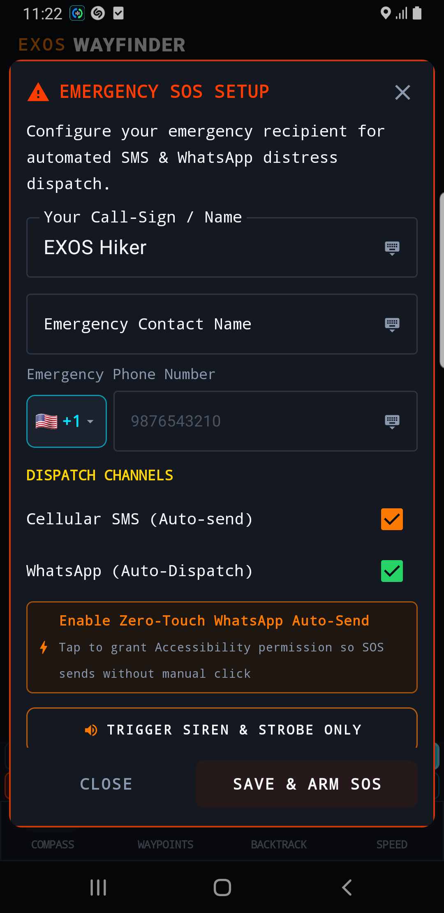
Waypoint Target Database
Saved target list with real-time distance, bearing, and MGRS military grid coordinates.

Reverse Backtrack Screen
Trail breadcrumb retracing engine with off-path deviation warnings.

Tactical Speedometer HUD
High-contrast speed, vertical descent rate, and elevation profile.
Complete Button-by-Button Tactical Breakdown
🟢 SENSOR CALIBRATED (Magnetometer Health Status)
Top Status Bar • Left Pill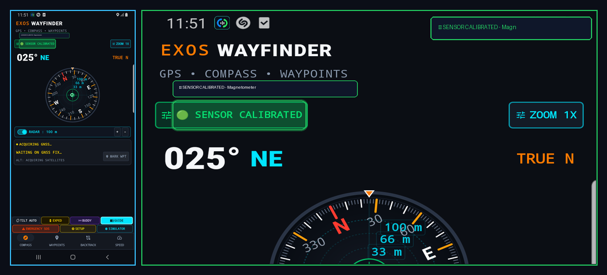
What it Does (In Plain English)
Shows whether your phone's digital magnetic compass is calibrated and trustworthy. When green, your compass direction is accurate; if it turns yellow or red, it warns you to wave your phone in a figure-8 motion to clear nearby magnetic interference.
Real-World Field Scenario
You are standing next to a metal vehicle engine hood. The pill turns amber reading 'CALIBRATE SENSOR' due to the engine block's magnetic field. You take five steps away into the open field and wave the phone in a figure-8. The pill turns solid green '🟢 SENSOR CALIBRATED', confirming your azimuth bearings are dead-on accurate.
Technical Specifications & Protocol Architecture
- Monitors Android SensorManager.SENSOR_STATUS_ACCURACY_HIGH (3) from geomagnetic sensor.
- Computes hard-iron and soft-iron magnetic distortion matrix in real-time.
- Suppresses erratic needle spin using a low-pass Kalman filter combined with 3-axis accelerometer tilt compensation.
ZOOM 1X (Radar & Dial Scale Toggle)
Top Status Bar • Right Pill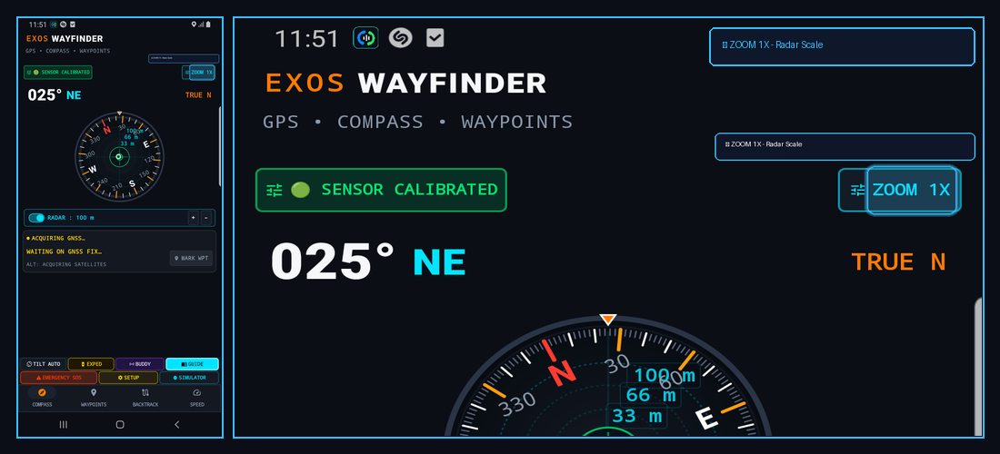
What it Does (In Plain English)
Switches the zoom level of the central compass rose and radar display between 1X (standard overview), 2X (close inspection), and 5X (tight target tracking).
Real-World Field Scenario
You are tracking three nearby waypoints clustered close together around an alpine spring. At 1X zoom, their icons overlap. You tap ZOOM 1X to toggle to ZOOM 2X, spreading out the targets on the radar disc so you can easily identify which spring is closest.
Technical Specifications & Protocol Architecture
- Adjusts radar projection scale matrix between 1.0f, 2.0f, and 5.0f zoom factors.
- Recalculates target waypoint pixel offsets on the circular canvas dynamically without reloading coordinate lists.
RADAR : 100 m (+/- Range Adjuster Bar)
Central Dial Overlay • Horizontal Bar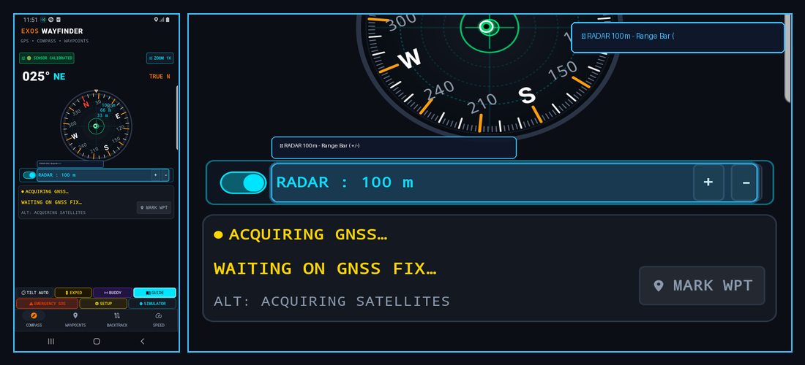
What it Does (In Plain English)
Expands or shrinks the distance covered by your on-screen radar circle. Tap '+' to view waypoints up to 50 km away across distant mountains, or tap '-' to zoom into 50 meters for close-range navigation.
Real-World Field Scenario
You are navigating through dense fog. You tap '-' until the radar bar reads 'RADAR : 50 m', giving you a high-precision close-range circular sweep showing your campsite tent pins as you approach.
Technical Specifications & Protocol Architecture
- Scales radar concentric range rings across discrete range steps (50m, 100m, 250m, 500m, 1km, 5km, 10km, 50km).
- Calculates Haversine distance from current GNSS fix to all active targets and clips out-of-range waypoints to the radar perimeter ring.
MARK WPT (Instant GPS Waypoint Capture)
Live Telemetry Panel • Action Button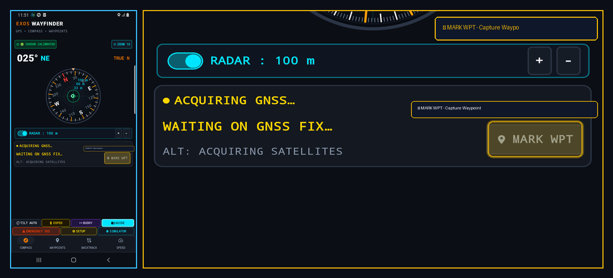
What it Does (In Plain English)
Your digital breadcrumb pin! Tapping MARK WPT instantly captures your exact current latitude, longitude, and elevation, saving it to your target list with a custom name like 'Camp 1', 'Water Source', or 'Vehicle'.
Real-World Field Scenario
You park your 4x4 at an unmarked wilderness trailhead before setting off on a 10-mile hike. Before walking away, you tap MARK WPT and name it 'Jeep'. Hours later when returning in darkness, Wayfinder's arrow points directly back to your vehicle with exact yardage.
Technical Specifications & Protocol Architecture
- Captures active Location(LocationManager.GPS_PROVIDER) fix with timestamp, WGS-84 decimal degrees, altitude (MSL), and horizontal accuracy (RMS).
- Stores waypoint object in local SQLite/Room database with military MGRS and UTM grid translations.
TILT AUTO (Dynamic 2D / 3D Gimbal Horizon)
Tactical Grid • Row 1 Button 1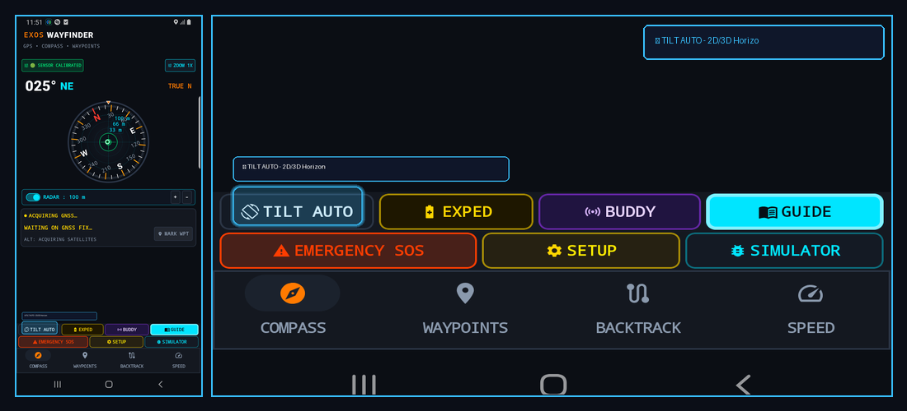
What it Does (In Plain English)
Switches the compass view between a flat top-down 2D map view and an aircraft-style 3D tilting horizon view that moves as you tilt your phone up toward the sky or down at your boots.
Real-World Field Scenario
You are climbing a steep 35-degree mountain slope. In standard 2D view, looking at the screen while holding the phone tilted is awkward. You tap TILT AUTO: the compass disc immediately transitions into a 3D perspective gimbal that aligns with the slope of the hill.
Technical Specifications & Protocol Architecture
- Utilizes OpenGL ES 2.0 / Canvas 3D matrix transformations driven by sensor orientation angles (pitch, roll, yaw).
- Smoothly interpolates rotation quaternions using spherical linear interpolation (SLERP) to eliminate gimbal lock.
EXPED (Expedition Trail Breadcrumb Logger)
Tactical Grid • Row 1 Button 2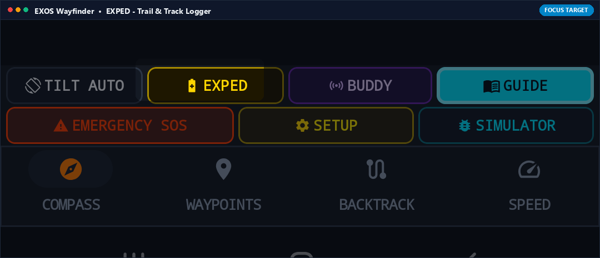
What it Does (In Plain English)
Starts or pauses recording your hiking trail. As you walk, it drops an invisible trail of breadcrumbs every 5 meters. You can view your full path on the map or export it as a standard GPX file for Google Earth.
Real-World Field Scenario
You embark on a backcountry traverse into uncharted canyons. You tap EXPED: a timer and distance tracker begin logging your path. Even if you wander off trails, your exact footsteps are preserved point-by-point in memory.
Technical Specifications & Protocol Architecture
- Runs background track recording service with distance-filtered location updates (minDistance = 5.0m, minTime = 2000ms).
- Computes cumulative elevation gain/loss, average moving speed, and exports standard GPX 1.1 / KML XML format.
BUDDY (Tactical Team Radio Beacon & Radar)
Tactical Grid • Row 1 Button 3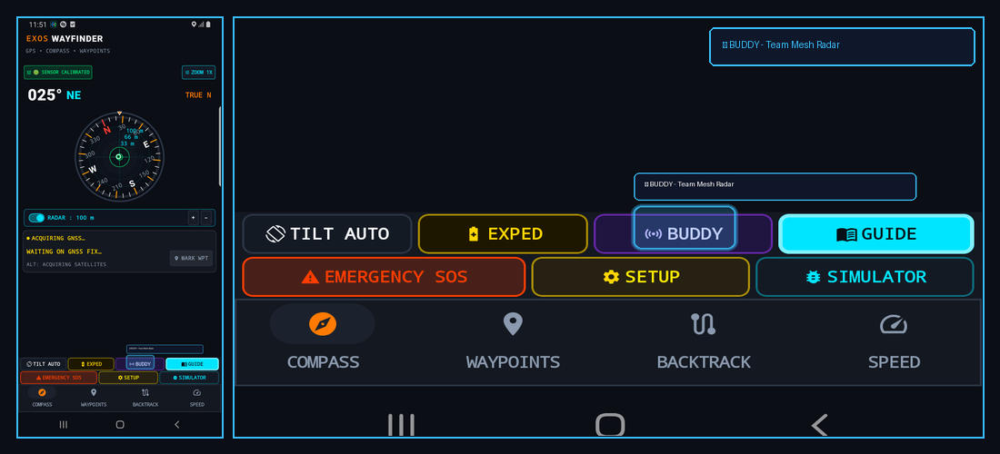
What it Does (In Plain English)
Links your Wayfinder compass with teammates running EXOS ECHO or EXOS Transceiver nearby. Teammates appear directly on your compass dial as glowing colored dots showing their direction and distance.
Real-World Field Scenario
In dense fog, you lose visual contact with your hiking partner. You tap BUDDY: their callsign 'ECHO-02' appears on your compass rim at bearing 045° at a distance of 85 meters. You walk straight toward their dot to reunite safely.
Technical Specifications & Protocol Architecture
- Listens for local UDP multicast beacon packets emitted by peer EXOS devices over Wi-Fi Direct or Bluetooth LE.
- Renders dynamic target blips on the compass bezel with relative bearing and range updates at 1 Hz.
GUIDE (Offline Land Navigation Field Manual)
Tactical Grid • Row 1 Button 4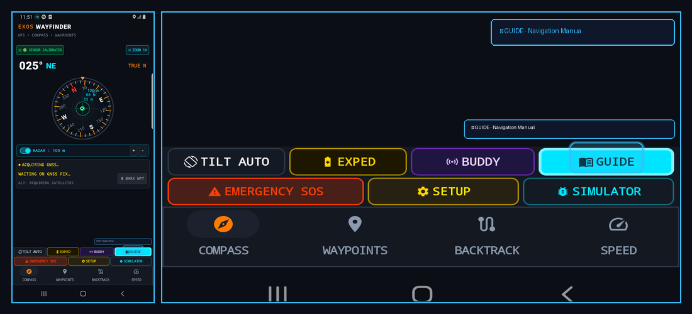
What it Does (In Plain English)
A complete wilderness navigation handbook built into the app. It teaches you how to read magnetic declination, triangulate landmarks, calculate pacing distance, and navigate by the sun and stars without internet.
Real-World Field Scenario
You find a topographic paper map at a ranger station with MGRS grid coordinates, but forget how to convert magnetic north to true north for that region. You tap GUIDE, open the Declination section, and review the exact calculation formula offline.
Technical Specifications & Protocol Architecture
- Loads embedded, standalone HTML field manual with diagrams, formulas, and military navigation tables cached in memory.
- Zero web connection or cloud access required.
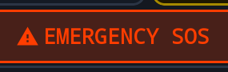
EMERGENCY SOS (Optical Strobe & Distress Beacon)
Tactical Grid • Row 2 Button 1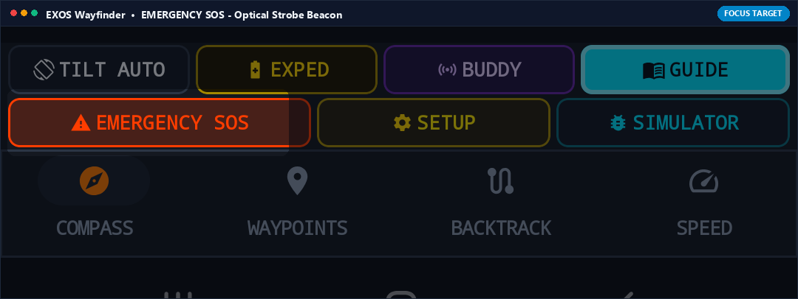
What it Does (In Plain English)
Emergency button! One tap turns your phone screen into a high-visibility flashing optical signal while activating your camera LED flashlight in international SOS Morse code, simultaneously broadcasting an emergency distress beacon.
Real-World Field Scenario
Night falls in freezing temperatures and a team member is injured. You tap EMERGENCY SOS. Your phone pulses high-contrast red/white flashes visible for miles across open valleys, allowing rescue helicopters to spot your location immediately.
Technical Specifications & Protocol Architecture
- Flashes display backlight at maximum brightness while modulating rear camera LED in Morse code sequence (... --- ...) via CameraManager API.
- Transmits UDP distress beacon packets containing real-time WGS-84 coordinates on emergency broadcast channels.
SETUP (Declination, Datum & Coordinate Units)
Tactical Grid • Row 2 Button 2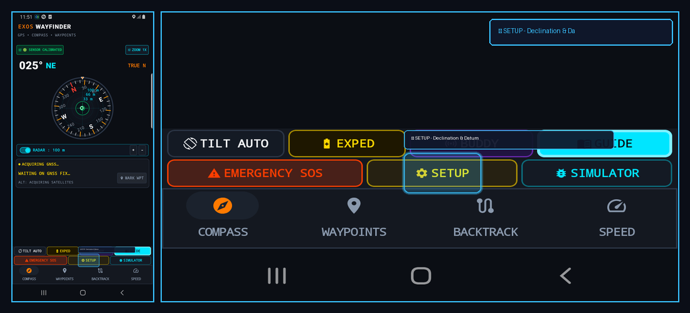
What it Does (In Plain English)
Configuration settings for serious navigators. Pick between MGRS military grid, UTM, or standard Latitude/Longitude; switch between Miles, Kilometers, and Nautical Miles; and configure automatic magnetic declination.
Real-World Field Scenario
You are coordinating with military rescue personnel who speak in MGRS grid coordinates (e.g. 4QFJ 1234 5678) rather than degrees. You tap SETUP, switch coordinate format to MGRS, and Wayfinder instantly displays all coordinates in standard NATO military grid format.
Technical Specifications & Protocol Architecture
- Supports WGS-84, NAD83, and ED50 geodetic datums.
- Computes geomagnetic declination using the NOAA World Magnetic Model (WMM) algorithm based on current latitude, longitude, and elevation.
SIMULATOR (GPS Orbit & Trajectory Simulator)
Tactical Grid • Row 2 Button 3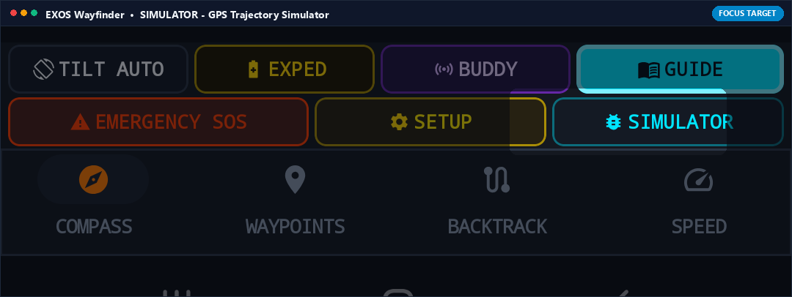
What it Does (In Plain English)
Lets you practice using Wayfinder indoors or during training sessions without being outside. It simulates realistic GPS movement, satellite acquisition, and compass heading for training and demonstrations.
Real-World Field Scenario
An outdoor guide is teaching a classroom of students how to navigate using Wayfinder before heading into the mountains. Tapping SIMULATOR lets students practice setting waypoints, tracking bearings, and following backtracks right inside the classroom.
Technical Specifications & Protocol Architecture
- Injects synthetic NMEA sentences into internal location pipeline with selectable trajectories (walking, driving, high-altitude flight).
- Simulates realistic satellite DOP jitter and multipath interference for training realism.
COMPASS TAB (Military Mil-Spec Dial & Gyro)
Bottom Navigation Bar • Tab 1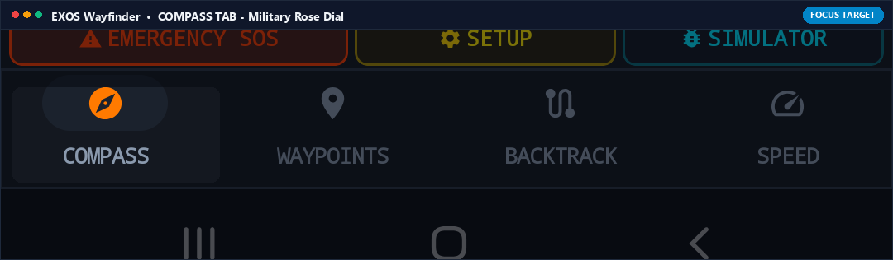
What it Does (In Plain English)
The main navigation cockpit! Displays the primary 360-degree compass rose with heading degrees, cardinal points, pitch/roll levels, and active target guidance arrows.
Real-World Field Scenario
You are hiking along a bearing of 025° Northeast. The Compass tab keeps your target arrow centered at the top of the dial, vibrating gently if you drift off course.
Technical Specifications & Protocol Architecture
- Renders mil-spec 6400-mil and 360-degree scales with smooth 60 FPS hardware-accelerated gyro-stabilized motion.
- Integrates World Magnetic Model (WMM) declination correction with True North indicator.
WAYPOINTS TAB (Target Database & MGRS Targets)
Bottom Navigation Bar • Tab 2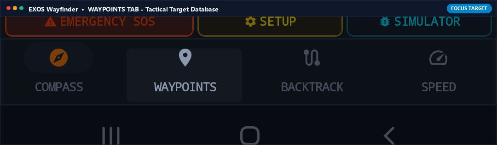
What it Does (In Plain English)
Your saved location organizer. View a list of all marked campsites, peaks, water sources, and vehicles, showing distance and direction to each point with a single tap to set navigation targets.
Real-World Field Scenario
You have saved 10 hunting stands across a private property. Tapping the Waypoints tab shows all 10 stands sorted by distance. You tap 'Stand #4', hit Navigate, and your compass dial immediately points toward that stand.
Technical Specifications & Protocol Architecture
- SQLite database with full-text search, GPX/KML file import/export, and sorting by proximity, name, or creation date.
- Computes real-time azimuth and range to all stored waypoints at 1 Hz.
BACKTRACK TAB (Reverse Breadcrumb Trail Return)
Bottom Navigation Bar • Tab 3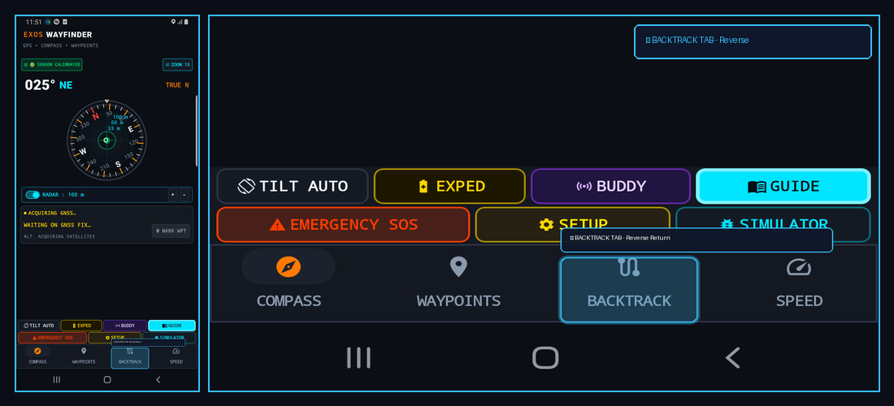
What it Does (In Plain English)
Your ultimate anti-lost safety net! Backtrack plots your return path along the exact footsteps you took on the way in, guiding you safely back to your starting point even if trails disappear under snow or darkness.
Real-World Field Scenario
A sudden whiteout blizzard covers your footsteps on an alpine pass. You open the Backtrack tab, tap 'Follow Return Trail', and Wayfinder guides you step-by-step in reverse along your recorded route, steering you safely around sheer drop-offs.
Technical Specifications & Protocol Architecture
- Inverts recorded GPS breadcrumb trajectory with dynamic point-snapping algorithm.
- Provides off-trail cross-track error (XTE) warnings if user deviates more than 15 meters from original path.
SPEED TAB (HUD Tactical Speedometer & Elevation)
Bottom Navigation Bar • Tab 4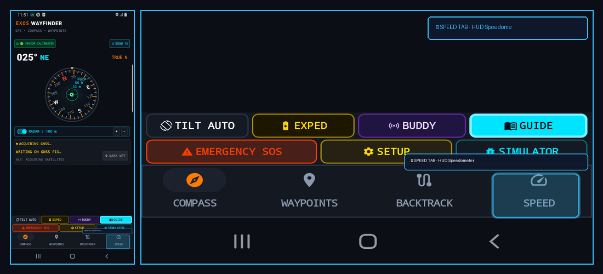
What it Does (In Plain English)
A tactical digital speedometer and elevation gauge showing your current moving speed, average speed, max speed, and altitude above sea level with a live elevation profile graph.
Real-World Field Scenario
You are descending a steep mountain trail. You switch to the Speed tab to monitor your descent rate, pacing, and remaining vertical descent to the valley floor.
Technical Specifications & Protocol Architecture
- Calculates Doppler-derived speed over ground (SOG) from GNSS chipset with 5-sample exponential smoothing.
- Barometric altimeter fusion calculates elevation change (VAM in m/h) and total ascent/descent metrics.
TRUE N / MAG N (North Azimuth Reference Toggle)
Compass Dial • Top Right Pill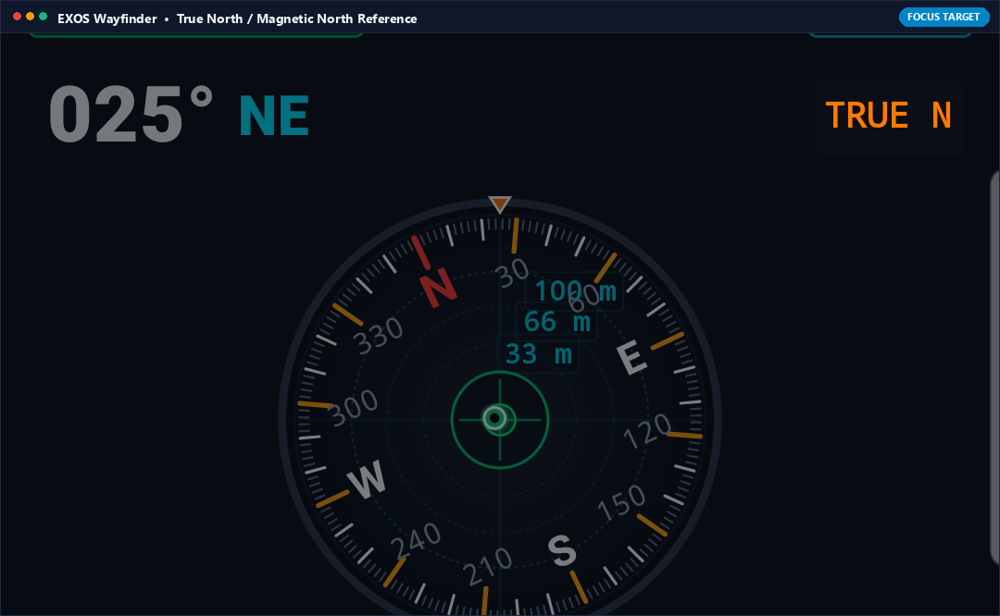
What it Does (In Plain English)
Switches your compass between True North (geographic North Pole) and Magnetic North (where magnetic compass needles point). Essential when matching your digital compass to topographic paper maps.
Real-World Field Scenario
You are navigating with a USGS topographic paper map that requires True North bearings. You tap TRUE N: Wayfinder automatically applies the local +14.2° magnetic declination so your screen bearings match your paper map grid lines perfectly.
Technical Specifications & Protocol Architecture
- Toggles between raw magnetometer azimuth and declination-corrected True North azimuth via WMM NOAA geodetic lookup.
- Displays current regional declination offset value directly on screen.
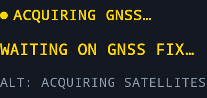
GNSS FIX STATUS & Altitude Readout
Telemetry Dashboard • Center Left Banner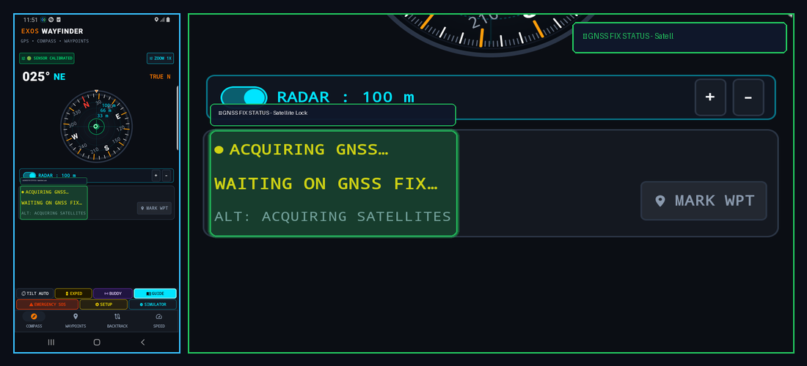
What it Does (In Plain English)
Shows real-time satellite lock quality (e.g. ACQUIRING GNSS... or 3D FIX: 18 SATS) and altitude. When it says '3D FIX', you know your position is locked onto multi-constellation satellites with meter-level precision.
Real-World Field Scenario
You emerge from a deep slot canyon into an open plateau. Looking at the GNSS banner, you watch it transition from 'ACQUIRING GNSS' to '3D FIX: 22 SATS (GPS+GLONASS+GALILEO)', confirming your elevation and position are locked.
Technical Specifications & Protocol Architecture
- Reads raw GnssStatus reports from GPS (US), GLONASS (Russia), Galileo (EU), and BeiDou (China) constellations.
- Displays 3D fix quality, HDOP/VDOP dilution values, and Mean Sea Level (MSL) altitude.
025° NE Azimuth Heading Display
Central Dial • Top Left Readout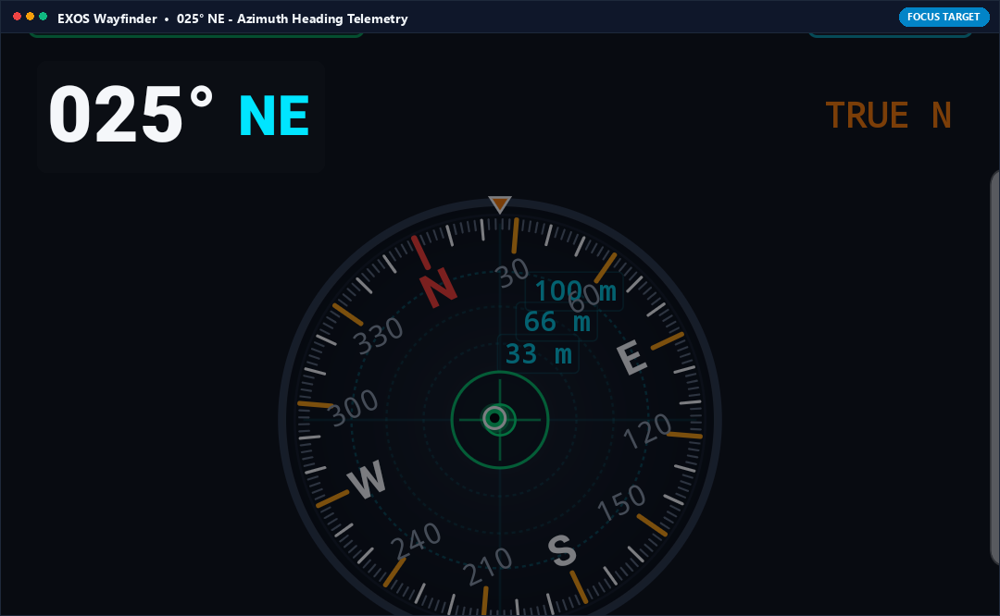
What it Does (In Plain English)
The large, high-visibility digital degree readout showing exactly which direction you are facing (e.g., 025° Northeast) in large, crisp military font.
Real-World Field Scenario
A teammate calls over the radio: 'Search bearing 025 degrees for the lost gear'. You turn your body until the large digital degree readout reads exactly 025° NE and walk straight along that azimuth line.
Technical Specifications & Protocol Architecture
- Displays 360-degree circular heading angle formatted as three-digit military azimuth (000° to 359°) with 16-point cardinal compass text.
- Updated at 30 Hz with sub-degree numerical precision.
Ready for Off-Grid Backcountry Navigation?
Download EXOS Wayfinder from the Google Play Store and master your orientation across uncharted terrain.